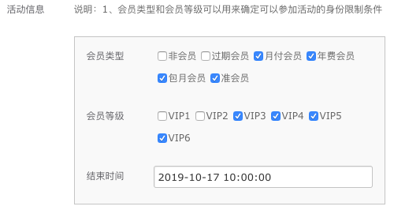
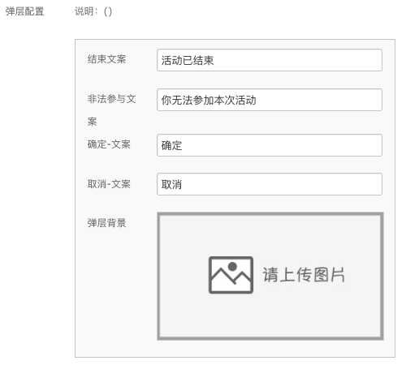

页面设置
页面设置可以操作内容：
- 标题
- 背景设置
- 分享
- 底部按钮
- 返回顶部
- 活动信息
- 统计配置
- 弹层配置
标题
用来配置活动页面的标题，默认是「这是标题」，每个活动都要配置。
背景设置
背景配置包括背景颜色、背景图，以及顶部间距；
背景颜色
可以使用拾色器，选择或吸取设计图上的颜色；
背景图
可以上传背景图，建议每个活动都上传带头部内容的背景图，页面会优先加载，图片体积不要太大，否则影响页面加载； 背景图
顶部间距
配合背景图使用。若上传了带头部内容的背景图，可根据内容区域高度设置顶部间距，单位是像素（px）。例如：150。
示例
底部按钮
返回顶部
活动信息
活动信息用来配置活动的结束时间、参与人群的限定信息。
会员类型和会员等级
会员类型和会员等级共同限定了参与人群的身份，例如示例中选定的人群为：等级大于等于3的会员用户。即使选择了准会员或非会员，由于等级因素，不会起到作用。
结束时间
输入活动结束的时间，格式为：XXXX-XX-XX XX:XX:XX。超过这个时间，进入页面会弹层提示活动结束的设置信息。
如果大转盘组件有结束提醒，这里则可以不设置。
示例

统计配置
统计配置用来为预设好的行为统计打码，发送给信息系统部，默认值uicode：40000327，actcode:4146，extcode：type:项目编号|F:url上的F值。
extcode说明：type的值为页面的id，例如：23。其他规则，要查看对应组件中的统计说明。
uicode和actcode一般情况下不用配置，使用默认值即可。如果需要自定义统计，可以自行申请uicode和actcode，extcode规则不变。
弹层配置
弹层是整体页面的统一弹层系统（除大转盘组件之外），可以设置文案和背景
示例[活动信息、统计、弹层]
